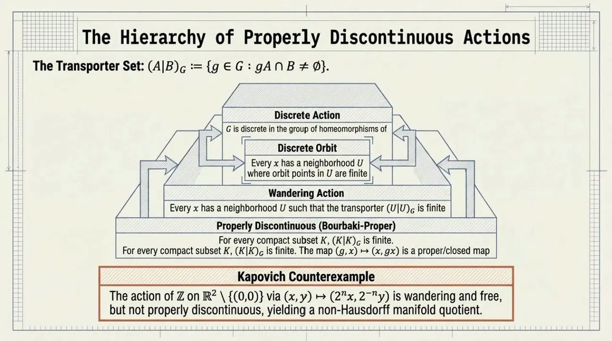

기둥 2 · 무리가 공간을 움직이는 법 · 08장
얌전한 작용의 등급 — 도장이 말썽을 부릴 때
운반자 집합으로 재는 네 층의 탑과 카포비치 반례
운반자 집합으로 재는 네 층의 탑과 카포비치 반례
핵심 질문 — 도장 찍기가 「얌전하다」는 건 정확히 무슨 뜻이고, 얼마나 얌전해야 몫공간이 깔끔해질까?
07장에서 궤도를 접어 몫공간을 만들었어요. 그런데 작용이 얌전하지 않으면 몫공간에서 두 점을 떼어 놓을 수 없는 이상한 일이 생겨요. 얌전함의 정도를 「A를 B와 겹치게 만드는 도장이 몇 개인가」(운반자 집합)로 재면, 네 층의 탑이 만들어져요.
숫자 요약은 이 장의 예시 계산에서 나온 값입니다(실제 데이터가 아닌 설명용 값).
1:1 토론입니다. 하루는 「자유 + 띄엄띄엄이면 충분」, X1은 「부족하다」 편!
나, 반례 하나 들고 왔어.
행렬·벡터, 복잡한 공식을 몰라도 됩니다. 그림을 움직여 보고, 밑줄 친 말을 누르면 뜻이 나옵니다.
이 페이지 사용법: 밑줄 친 말을 누르면 뜻이 나옵니다(Esc로 닫기). 단계마다 그림을 직접 움직여 보고, 끝의 확인 퀴즈로 점검하세요. 앞 장: 07 군과 작용 — 도장 찍기 규칙
조수 하루는 「자유롭게 움직이고 궤도가 띄엄띄엄하면 충분히 얌전하다」, 미공개 X1은 「그걸로는 부족하다」 편이에요. 조교가 반례로 판정을 돕습니다.
고정점도 없고 궤도도 띄엄띄엄하면, 더 뭐가 필요해요?
…두 동그라미를 잡아 봐. 겹치게 하는 도장이 몇 개야?
고유 불연속이 아니면 몫공간에서 서로 다른 두 점을 떼어 놓을 수 없는(하우스도르프가 아닌) 일이 생겨요.
고정점이 없어도 도장들이 「멀리서 끝없이 겹치는」 문제가 남아요. 카포비치 반례가 그 예예요.
수학 정리에 붙은 조건(고유 불연속 등)이 왜 필요한지, 반례로 확인하는 연습이에요.
탑의 이름이 영어 번역이라 어렵게 들려요. 이름보다 「겹치게 하는 도장 수가 유한한가」라는 질문 하나만 따라가면 됩니다.
상황 질문 — 창고 바닥의 상자 A를 정해진 걸음으로만 밀 수 있다면, 몇 번째 걸음에서 구역 B와 겹칠까요?
(A|B)_G := {g ∈ G : gA ∩ B ≠ ∅} … 「:=」랑 「≠ ∅」는 뭐예요?
학교 수학으로 보면: 「:=」는 「이렇게 정의한다」는 뜻, 「≠ ∅」는 「공집합이 아니다 = 겹친 곳이 있다」예요. 집합의 조건제시법이에요.
| 식 조각 | 읽는 법 | 뜻 |
|---|---|---|
| gA | 지 에이 | 집합 A 전체에 도장 g를 찍어 옮긴 것 |
| gA ∩ B ≠ ∅ | 옮긴 A가 B와 조금이라도 겹침 | |
| (A|B)_G | 에이 바 비 운반자 집합 | 겹치게 하는 도장 전부 |
G = 정수 평행이동, A = [0, 0.6], B = [2.2, 3.4]
A + n이 B와 겹치려면 n ≤ 3.4 이고 n + 0.6 ≥ 2.2
→ 1.6 ≤ n ≤ 3.4 → n = 2, 3
운반자 집합 = {2, 3}, 2개 (유한)
부등식 두 개 풀면 되네요. 이건 중학교 연립부등식이에요!
창고에서 상자를 「1미터씩」만 밀 수 있다면, 상자가 구역 B에 닿는 밀기 횟수는 몇 가지 안 돼요. 상자와 구역이 유한한 크기니까요.
운반자 집합(겹치기 도장 모음)은 A를 B와 겹치게 하는 도장들의 모음이에요. 크기가 유한한(콤팩트) 영역을 자기 자신과 겹치게 하는 도장이 언제나 유한 개면 고유 불연속 작용(얌전한 작용)이라 해요. 정수 평행이동은 얌전한 작용이에요.
A와 B의 길이를 늘려 보며 겹치게 하는 도장 수를 세어 보세요.
길이를 늘리면 도장 수도 늘어나요! 결국 무한해지겠죠.
늘어나긴 하지. 그런데 길이가 유한한 한, 유한한 수에서 멈춰.
원자료 「The Hierarchy of Properly Discontinuous Actions」 맨 위의 운반자 집합 정의.

상황 질문 — 놀이기구 안전 등급처럼, 작용의 얌전함에도 등급을 매길 수 있을까요?
안전 등급이 가장 높은 놀이기구는 낮은 등급 검사도 함께 통과해요. 하지만 낮은 등급을 통과했다고 높은 등급을 받는 건 아니에요.
원자료의 탑(아래가 가장 엄격): ① 고유 불연속 작용 — 유한한 영역은 늘 유한 번만 자기와 겹침 → ② 떠도는 작용 — 점마다 「유한 번만 겹치는 작은 동네」가 있음 → ③ 이산 궤도 — 점마다 궤도 점이 유한 개만 들어오는 동네가 있음 → ④ 이산 작용 — 도장 무리가 띄엄띄엄. 아래층을 통과하면 위층도 통과해요.
카드를 아래층부터 차례로 눌러 보세요. 아래층 조건이 위층 조건을 어떻게 만드는지 보세요.
떠도는 작용이면 이웃 하나는 잡을 수 있으니까… 궤도 점도 유한 개만 들어오겠네요.
맞아. 그런데 거꾸로, 떠도는 작용이면 고유 불연속일까? 다음 단계에서 봐.
원자료의 탑 그림: 맨 아래 고유 불연속, 그 위 떠도는 작용, 이산 궤도, 맨 위 이산 작용.
상황 질문 — 사진을 가로로 2배, 세로로 1/2배 하는 편집을 계속 반복하면, 서로 멀던 두 점이 「구별할 수 없게」 될 수 있을까요?
2⁻ⁿ처럼 지수가 음수면 어떻게 계산해요?
학교 수학으로 보면: 중학교 거듭제곱의 확장: 2⁻¹ = 1/2, 2⁻² = 1/4, 2⁻³ = 1/8. 음수 지수는 「나누기」예요.
| 식 조각 | 읽는 법 | 뜻 |
|---|---|---|
| gⁿ(x, y) = (2ⁿx, 2⁻ⁿy) | n번째 도장: 가로 2ⁿ배, 세로 2⁻ⁿ배 | |
| xy | 엑스 와이 | 도장을 찍어도 변하지 않는 곱 → 궤도는 쌍곡선 xy = 일정 위에 |
| p = (1, 2ⁿ) | n이 음수일수록 (1, 0)에 가까운 점 |
n = −3: p = (1, 1/8)는 (1,0) 근처
g⁻³ p = (2⁻³ · 1, 2³ · 1/8) = (1/8, 1)는 (0,1) 근처
n = −10: p = (1, 1/1024), g⁻¹⁰ p = (1/1024, 1) — 더 가까움
어떤 작은 동그라미를 잡아도 이런 n이 끝없이 많음 → (U|V)가 무한
곱 xy는 그대로인데 가로세로가 서로 바뀌듯 움직이니까, 오른쪽 점 근처가 위쪽 점 근처로 계속 넘어가네요!
사진을 가로 2배·세로 1/2배로 계속 늘이면, 오른쪽 끝 근처의 아주 납작한 점들이 위쪽 근처로 옮겨져요. 아무리 작은 두 동그라미를 잡아도 「배달」되는 횟수가 끝없이 많아요.
카포비치 반례: ℤ가 ℝ² \ {(0,0)}에 (x, y) ↦ (2x, y/2)로 작용하면 자유롭고 떠도는 작용이지만 고유 불연속이 아니에요. 몫공간은 매끈한 곡면처럼 생겼지만, (1,0)과 (0,1)의 궤도를 겹치지 않는 이웃으로 떼어 놓을 수 없어 하우스도르프가 아니에요.
동그라미 반지름을 줄이고, 살펴볼 도장 수를 늘려 보세요.
반지름을 0.05로 줄이면 도장이 몇 개 안 남겠죠!
도장 수를 30까지 늘려 봐. 개수가 멈추는지 계속 느는지.
원자료 맨 아래 「Kapovich Counterexample」 상자: ℤ가 ℝ² \ {(0,0)}에 (2ⁿx, 2⁻ⁿy)로 작용 — 떠도는 자유 작용이지만 고유 불연속이 아니며 몫공간은 하우스도르프가 아닌 다양체.
몫공간 M = (ℝ² \ {0})/ℤ는 국소적으로 평면과 같은(다양체) 공간이지만, (1,0)과 (0,1)의 상은 하우스도르프 분리가 안 된다: 두 점의 어떤 이웃 U, V에 대해서도 (U|V)_ℤ가 무한(특히 공집합이 아님)이기 때문이다. 좌표축 위의 점들은 각각 자유롭게 움직이지만, 축 근처의 궤도들이 두 축 사이를 오간다.
하루가 토론 준비로 AI에게 「고정점이 없는 작용(자유 작용)이면 몫공간은 늘 깔끔한 곡면(하우스도르프)이죠?」라고 물었어요.
AI는 비슷한 두 성질(뾰족함 없음 / 분리 가능)을 하나로 합쳐 말하곤 해요. 결론이 맞는지 의심되면, 이 페이지의 반례 같은 「유명한 반례 목록」을 먼저 떠올려 보세요.
카포비치 작용에서 반지름 0.05인 아주 작은 동그라미 U((1,0) 둘레)와 V((0,1) 둘레)를 겹치게 하는 도장 수를 셌어요.
「도장이 끝없이 많아. 떼어 놓을 수 없어.」
「이렇게 작은 동그라미면 겹칠 일이 거의 없어요!」
누가 맞을지 먼저 예상해 보고 단추를 누르세요. 판정은 계산 결과로만 합니다.
개념정리 흐름: 운반자 집합과 고유 불연속 작용 → 얌전한 작용의 등급 → 카포비치 반례
| 개념 | 한 줄 뜻 | 일상 비유 | 비유의 한계 |
|---|---|---|---|
| 운반자 집합 | A를 B와 겹치게 하는 도장 모음 | 상자 밀기 횟수 | 도장이 「겹친다」만 보고 얼마나 겹치는지는 안 봄 |
| 고유 불연속 작용 | 콤팩트 K마다 (K|K) 유한 | 1등급 안전 검사 | 가장 엄격 — 확인이 어렵지만 결론이 확실 |
| 얌전함의 네 층 | 아래층이 위층을 함의 | 안전 등급표 | 층 사이 함의에 추가 조건이 필요할 수 있음 |
| 카포비치 반례 | 자유·떠도는데 고유 불연속 아님 | 늘였다 줄인 사진 | 몫공간이 「국소적으로는」 매끈해 보여서 문제를 놓치기 쉬움 |
토론 판정: X1 승. 반례 하나가 주장 전체를 뒤집었어요.
내 반례, 이름이 카포비치래.
고정점이 없으면 끝인 줄 알았는데…. 다음엔 조건부터 확인할게요.
…네 층… 탑… 쿨….
다음 장 예고: 09장 조별 과제에서는 얌전한 작용으로 평면을 「빈틈없는 타일」로 덮어요. 육각형 타일과, 위로 끝없이 뻗는데도 넓이가 유한한 쌍곡 타일이 나와요.